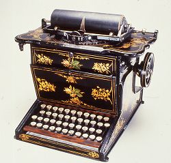

Looking at Artifacts, Thinking about History
Artifacts reflect changes
Times change; history is the story of those changes. An artifact, or a collection of artifacts, can reflect change over time. Artifacts change as our society and culture change; artifacts nudge these changes along; and artifacts themselves change over time. Artifacts reflect changes, and sometimes cause change. They allow us opportunities to consider how and why society and culture change over time.

Think about some of the changes reflected by this typewriter, manufactured by E. Remington & Sons around 1875. It tells a story of innovations in technology and manufacturing. The adoption of the typewriter, at just the same time that women began to work in offices, reflected changes in women's roles, new ideas about the organization of work, and the rapidly growing corporations of the day. In turn, the typewriter brought about and helped to accelerate social change, opening up new jobs for women in the office.
- Changes in Business and the Workplace. The typewriter, by reducing the time and expense involved in creating documents, encouraged the spread of systematic management. It allowed a system of communications that shaped the business world. While the typewriter wasn't responsible for opening the office world to women—the shortage of men during the Civil War and the increasing division of labor and specialization of office work played a bigger role—it did encourage the feminization of office work. In 1870, there were very few women office workers. In 1890, there were nearly 45,000, and 64 percent of stenographers and typists were women.
- Social Changes. In the 1880s, when the typewriter was first adopted in many offices, America was a country in the throes of rapid change. The way in which the typewriter was adopted reflected changes in women's roles, new ideas about the organization of work, and the rapidly growing corporations of the day. In turn, the typewriter opened up many new jobs for women in the office.
- Changes in People's Lives. Though it took a while for the typewriter to catch on, it quickly changed the lives of those who used it. Many working-class women saw office jobs as an escape from the drudgery of factory jobs. Office work was a step up in the class structure, a cleaner, higher-paying job. One novel described the changes in the life of a young woman when she got her first job as a typist.
- Invention, Innovation and Obsolescence. Dozens of inventors had tried to invent a workable writing machine, but it wasn't until 1872 that the right combination of a clever mechanism, manufacturing expertise, and a growing market allowed the typewriter to become a commercial success. Christopher Latham Sholes, a Milwaukee printer, editor, and government bureaucrat, received his first typewriter patent in 1868, and two more in the next few years. Many inventors devised improvements for the typewriter, from the shift key in 1878 to the electric typewriter in 1920. In all, several thousand typewriter patents were granted. But by the 1980s, the typewriter had begun to disappear, overcome at first by the word processor and then by the personal computer, which could do everything the typewriter could do and much more.
- Changes in Manufacturing. Christopher Sholes was unable to raise the money, successfully organize a factory, or find the skilled labor to produce his typewriter invention cheaply and in volume. In 1873 he sold his patent rights to E. Remington and Sons, manufacturers of guns and sewing machines, who had the technological skills to develop and manufacture the machines. The typewriter has numerous small precision parts. To make the machine cheaply enough to reach a large market, it had to be mass-produced. Remington and others soon developed ways to apply existing technology and techniques, including the "interchangeable parts" system, to the manufacture of the typewriter.